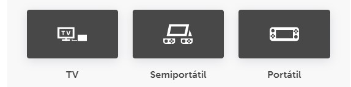
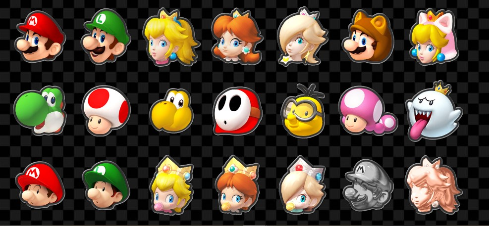
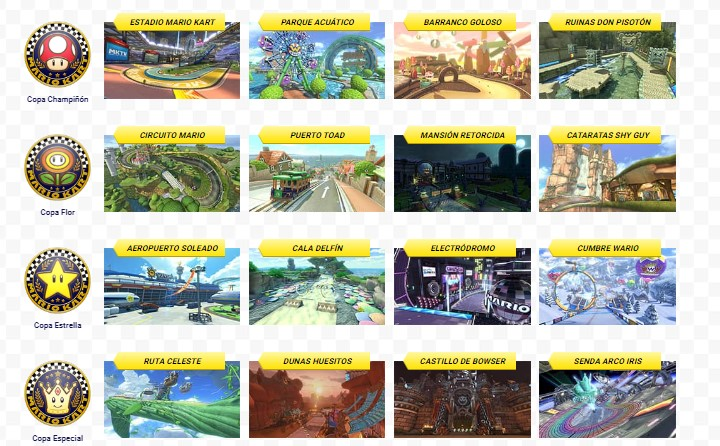

¡Corre con Mario y sus amigos donde quieras y cuando quieras!
¡Acelera a través de las pistas del Reino Champiñón bajo el agua, en el cielo, de cabeza y sin gravedad, y llega a la meta para obtener la victoria! Prepara motores en el modo multijugador local*, en los torneos en línea** del juego, en el modo batalla que ha sido mejorado ¡y más!
¡Descubre lo nuevo de Mario Kart™ 8 Deluxe y juega con nuevos personajes como Inkling chica e Inkling chico! Podrás elegir sus karts inspirados en el juego Splatoon en Parque Viaducto para el modo batalla. También hay objetos que están de regreso, como Boo, el fantasma que roba objetos, y la pluma, que se usa en el modo batalla, ¡y ahora podrás llevar dos objetos a la vez! Demuéstrale al mundo que eres el mejor en los torneos en línea o compite con tus amigos a través de internet. Con tantas opciones de control y el modo portátil, ¡siempre habrá una nueva manera de jugar en la consola Nintendo Switch™!
Modos de juegos compatibles
¡Calienta motores en la versión definitiva de Mario Kart™ 8 y juega donde y cuando quieras!
Personajes
El juego de Mario Kart con más personajes El juego Mario Kart 8 Deluxe tiene 42 personajes para escoger, ¡La lista de personajes más grande en la historia de la serie!
Circuitos
Montones de circuitos Compite por la copa en 48 circuitos, incluyendo algunos inspirados en las series Excite Bike™ y The Legend of Zelda™.